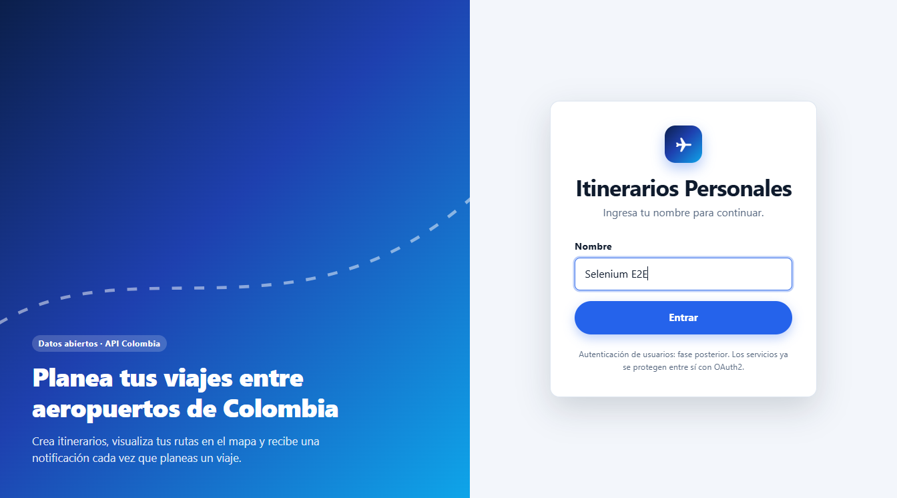
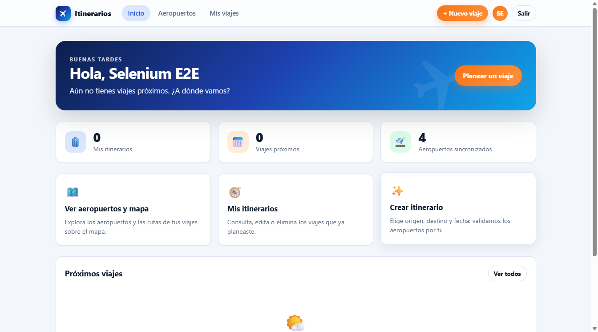
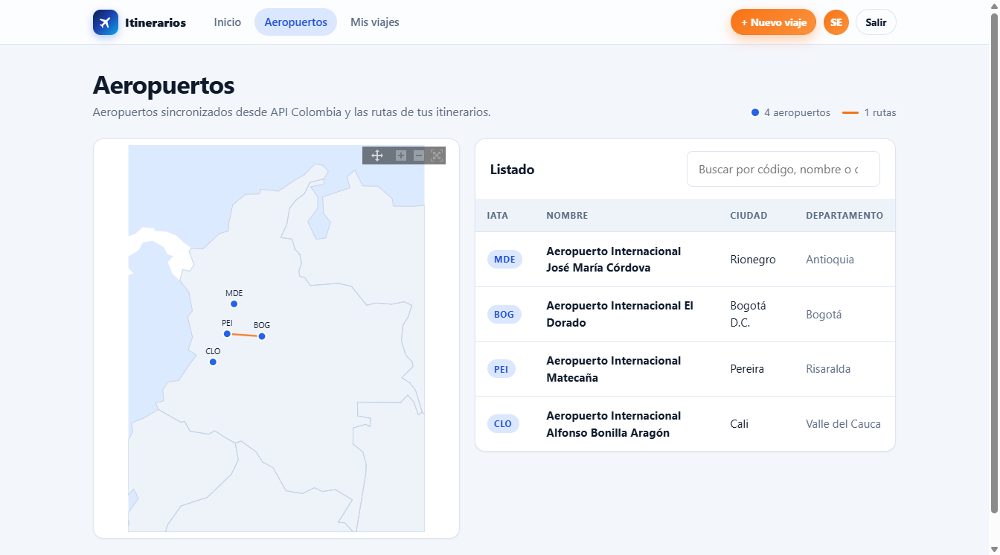
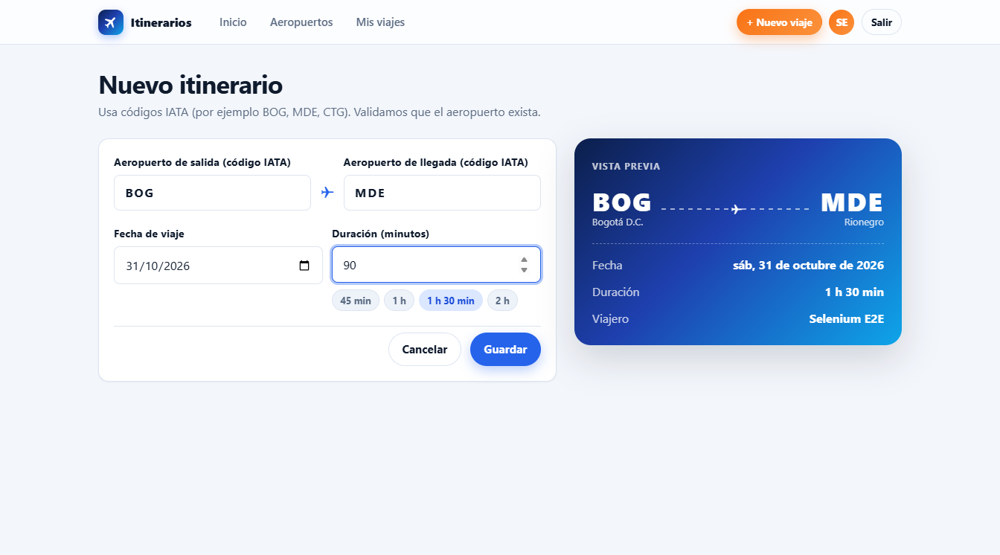
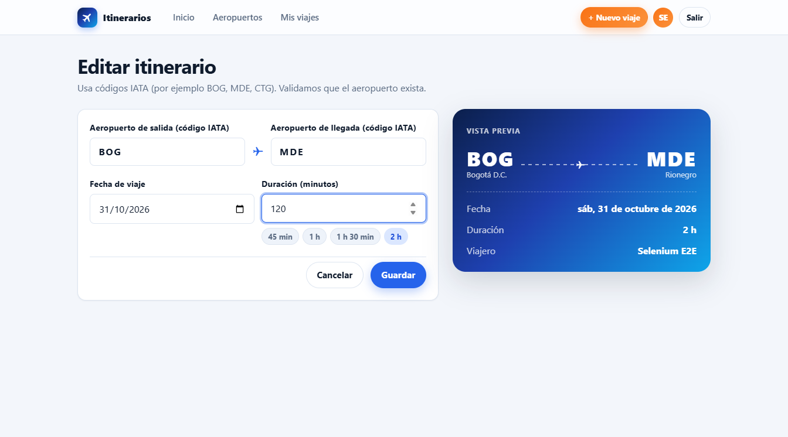
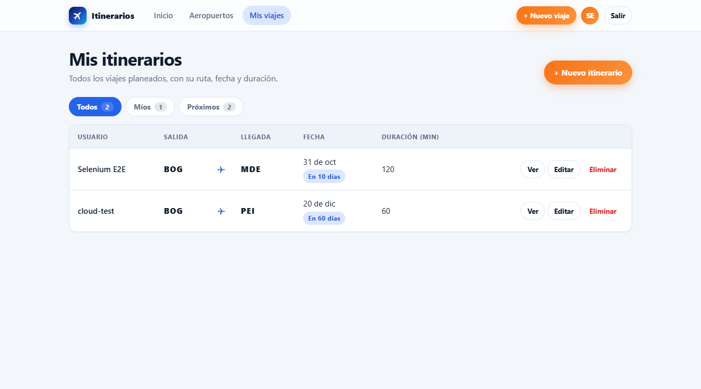
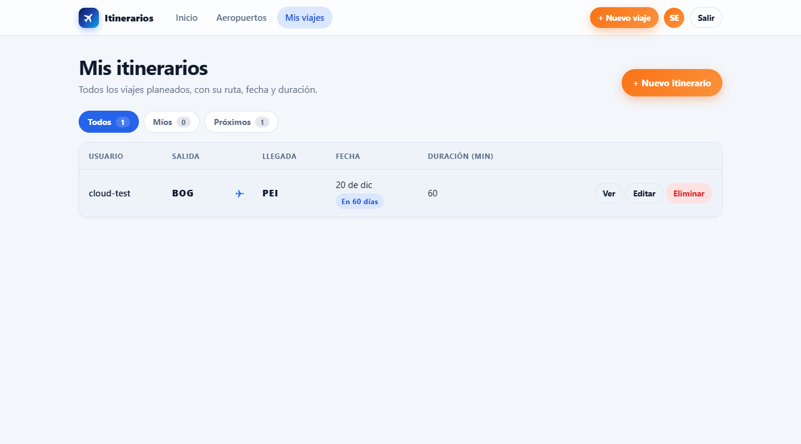

Sistema de Itinerarios Personales — reportes de pruebas
Generado: 2026-10-21 17:10
Cobertura JaCoCo (mvn verify)
Selenium E2E: 1 pruebas, 0 fallas
Flujo completo contra el despliegue en AWS (frontend en ECS → Gateway → servicios).

01-login
02-dashboard
03-aeropuertos-y-mapa
04-formulario-nuevo-itinerario05-itinerario-creado-en-la-lista
06-edicion-duracion-120
07-itinerario-editado
08-itinerario-eliminado